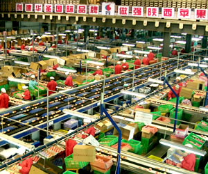
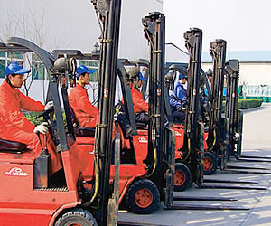

生产设备信息
果业工厂现使用的两条苹果分选线，分别是1997年从世界著名水果分选线制造厂意大利MAF RODA公司购进的果品分选线和2002年从UNITEC公司购进的UNITEC分选线。其中MAF RODA分选线有14条包装台，分选效率为10吨/小时，50个工位；UNITEC分选线有40条包装台，分选效率为22吨/小时，100个工位。
公司拥有德国和日本制造的生产辅助叉车32台，既可保证工厂区内的物流装卸作业又能够对外提供服务。其中：林德电瓶叉车10台；林德柴油叉车10台；小松电瓶叉车10台；小松柴油叉车2台。32辆叉车用于冷库及厂区果品及生产物资的调运。
|  |  |